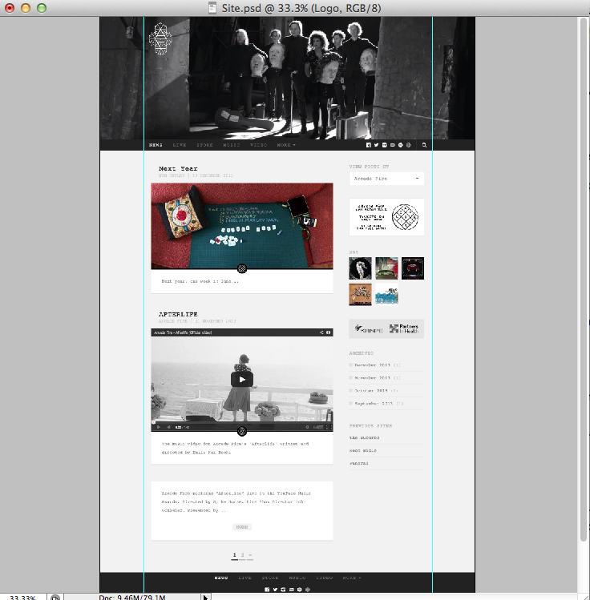
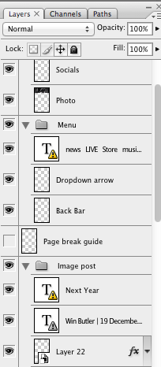

Basics
We have attempted to create a fluid one-page scrolling website that is engaging and easy to navigate for a fan of Arcade Fire. By combining HTML with CSS and JavaScript we were able to create a dynamic, responsive design that immerses the user while remaining easy to navigate at all times.
Since Arcade Fire are an extremely large, image-orientated indie rock band it was important for our website to be aesthetically stunning and in matching with the band's visual branding without overloading a user with images and spoiling the user-experience.
In addition to creating the standalone website for the assignment, Arcade Fire requested we also skin a blog/news style website to act as both a temporary website during the development process of the main site and later retire to act as the blog section of the website. By rebranding and skinning a WordPress install for the blog section we allowed the band members to remain on a platform they are comfortable using, while still providing a website that is visually appealing to users, and in theme with the main website.
This blog is already live on the client's website viewable here. We will discuss the work and process for this in a later section of this report.
As a brief summary, during this project we have used: XHTML, CSS, JavaScript, jQuery, PHP (minor for WordPress implementation), Photoshop, Gimp, Inkscape and attempted animation with SVGs, JavaScript and CSS. We have attempted to use as few CSS libraries as possible to focus on implementing things such as responsive design by hand.
We had 2 CSS errors in main.css, however they are vital to the CSS animation of our page load element and for this reason we have left them in our CSS as requested by our client. This animation seems to work across all major browsers and seemed like CSS animation was a better option than using a .gif. We are unsure if this will reduce our mark so have made a note here that we are aware of it and have opted to keep it in.
Further Responsive Design
We attempted to make all elements of the site's design responsive to browser changes, including the album artwork resizing, columns realigning and sections re-designed for different sizes. We used % where possible for major elements, pixels for specific minor positioning and em when elements were related to fonts.
Animated Header Logo (.svg)
We created a large svg version of Arcade Fire's logo as decoration to exist above the main header image using Inkscape. Using the opacity channel we were able to create the illusion of a steady fade upon scroll down, and used real SVG animation upon page load (this works in Chrome, but unsupported in Firefox).
Parallax Elements
Another style choice we made during the website creation was the use of parallax background elements to provide a sense of depth for a user while scrolling. Having some experience with parallax headers prior to this assignment we were able to write this code from memory, though originally learning how to create these effects through multiple tutorials online.
Our exact implementation requires, in CSS, the background of a div to be held in position: fixed and centered in the x-direction, then upon scroll jQuery (see implementation in parascroll.js) calculates the background-position in the y-direction that the image is modified, with respect to the scrolling rate.
Glide Scrolling
To accompany the parallax backgrounds we implemented javascript 'glide scrolling', a technique to automatically scroll a user to a specific point in the page in a clean and quick way. We have both had experience implementing this previously, after learning how it works in previous web self-study, so for this assignment we implemented a slightly modified version of a basic smooth slider we had implemented months ago (link) and adapted the animation speed to suit for this project.
This glide scrolling is utilized by the navigation bar, the footer navigation bar, the 'return to top' image at the bottom of the page and each section's footer logo which acts as a 'move-to-next-section' button.
Music Hidden Drawer
We have implemented a hidden drawer in CSS and JavaScript for the Music section of the website. By animating the div and increasing the height we are able to create space for content to to extend on the option a user interacted with. The content divs for each option are hidden off the side of the page with height=0, when an option is pressed the jQuery checks to see if a content div currently occupies the space. If not, the option's selected respective content animates in from the side. Otherwise, the content currently occupying this area leaves and is replaced by a new div. This was a custom jQuery implementation tailored for this site's content and was by far the most time consuming aspect of the project as attempting to keep this section's design responsive was a lengthy and troublesome task.
When this drawer opens it displays extended information about the album, as well as a mockup of a music player and some buy links. We created the mockup music player in Photoshop, basing it on the Spotify app's styling. By creating a template of music player on one layer, with a secondary layer below for album artwork we were able to quickly create multiple music player mockups with the same dimensions and aesthetic. However, in the server side coursework we aim to implement a real custom music player.
Additionally in this section, we created animated windows on hover of the album artworks. This is a largely modified implementation of this tutorial which we used to learn more about CSS animation.
'Loading...'
We created a preloader that allows the site to have an air of professionalism while it loads. Instead of witnessing the images steadily load in front of a user, a loading catch page makes sure the site is not displayed until it is complete. Neither of us had experience with creating pre-loaders before, however we had attempted to implement lightboxes in a previous project and applying the same principle was able to create one quickly.
Using a fixed div that occupies the full height and width of the screen, containing only a CSS-animated rotating .png created in Photoshop, creates the illusion of a loading page while hiding the real page-load behind it. We use jQuery to notice when the page has finished loading and then fade out the elements of the the preloader. The jQuery fade out animations were modified from an old lightbox implementation, which came from a tutorial used for self-study last year.
Video Carousel
We implemented a placeholder video carousel that interacted with YouTube embeds to create a working video player. We had to use YouTube embeds as per the request of our client, their social statistics are important for radio, however such embeds require iFrames which SAFE does not seem to agree with. To detail this anyway, we created a custom play/pause button for the focus video, next/previous video button to change focus video, and animated thumbnails below into a loop carousel.
This was also a time consuming part of the project as learning how to interact with YouTube videos (in order to pause the one leaving the screen, avoiding multiple players with audio going at once) was not something we were previously experienced with.
To see this implementation in a working state (including the YouTube video custom play/pause instructions) visit here: alternative host.
Circular Image Gallery
We implemented a simple image flow gallery where a single image changes to multiple different source images by animation. This was done following the tutorial of Paul Mason as an exercise of using transparent area of images for decoration.
While the jQuery is simple for this gallery, we added an extra effect by creating all of the images for the gallery in Photoshop. We created a template size and included all of the images on seperate layers, before placing a circle object over the top of them. By selecting the outline of the circle and then selecting inverse, before returning to an image layer and deleting the 'outside' of the circle it made it appear as though all the images are peering through a circular window due to their .png transparency.
Day and Night CSS Themes
We created an alternate CSS file named theme.css. When this is added to the document, it overwrites some of the key styles on the page (nav bar, headers, etc) taking the site from a black and white dark theme to a colourful light theme.
We decided to use jQuery to get the current time and, if it's currently daytime, set the light theme, otherwise set the darker theme.
Originally we had themes selected based on a random integer, but too many themes made it a confusing user experience each time you refreshed. If a user prefers a particular theme, we have added a theme selection hyperlink to the footer's navigation. This seems to have some issues within SAFE in some browsers, however runs perfectly on the Node server with all browsers as well as locally and on our own hosting. I have uploaded a working version here: alternative upload.
Konami Code Keyboard Easter Egg
If you press 'up up down down left right left right b a' on our site you will be taken to a surprise page. We used a Konami Code tutorial to learn how this is implemented on other sites and implemented it purely for fun, and for the learning experience.
Interactive SVG Neon Bible
We created an Inkscape version of Arcade Fire's Neon Bible album cover, and used dynamic control over the SVG's paths to make a fun neon painting mini game where users are able to paint Neon Bible in colours selected at random upon click.
WordPress
Extensive CSS, JavaScript and some PHP was employed to re-skin a WordPress template for the current arcadefire.com site. Once again we made this site design responsive for mobile and tablet, and connected the theme of the layout with the main site.
We did not include these files in our submission as the WordPress requirements mean they will not adhere to the standards required, however we have uploaded the work we undertook for these parts of the project to our own site if you'd like to see.
Cross-browser compatibility
Our site works perfectly as required in Chrome, Firefox and Internet Explorer 9 after including some minor CSS fall-backs to cater for the differences between these browsers. We have also catered for previous versions of Internet Explorer by including fall-back CSS stylesheets tailored to them - these particularly focus on the browser's lack of support for transparency and opacity effects.
As the version of IE degrades, less of our site is supported, however instead of allowing the site to break and become a mess we attempted to degrade the site gracefully by removing the broken elements in these browsers and replacing them with less-functional elements.
Designing
All of the custom buttons for our site, and the entirety of both blog and site's designs were first mocked up in Photoshop to allow stylistic choices and additional artistic exploration.

As an experienced Photoshop and Gimp user, using multi-layer effects to create a dream design allows much more ambitious final design goal.
